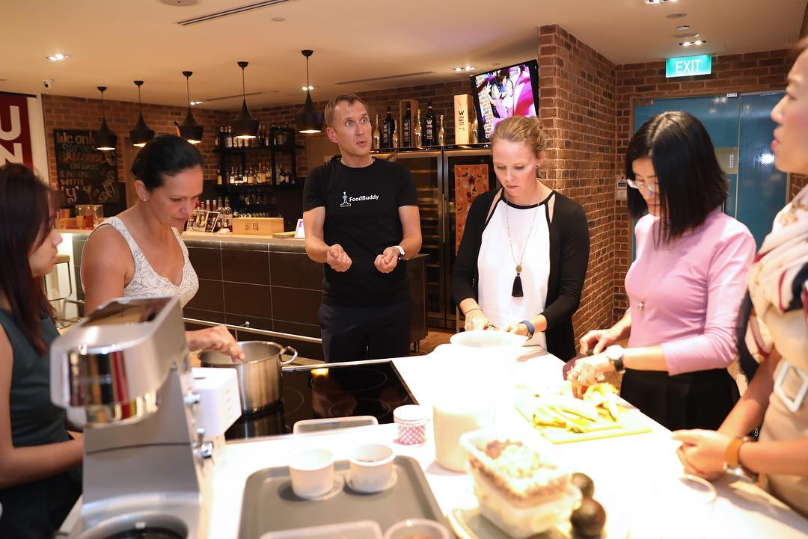
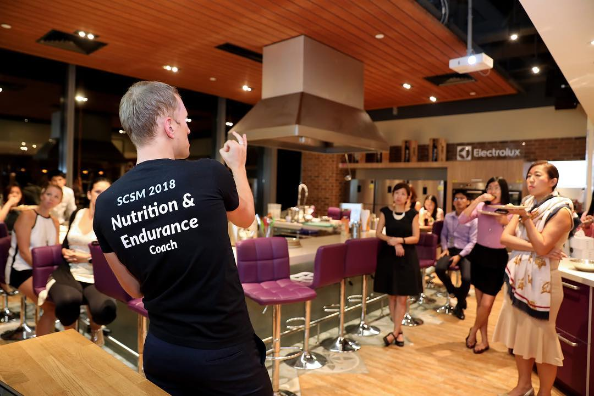
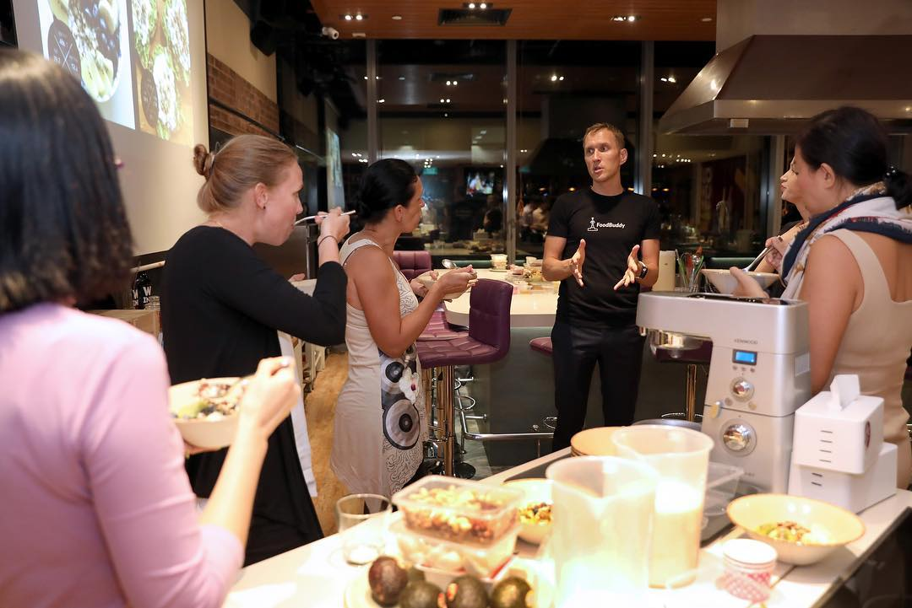
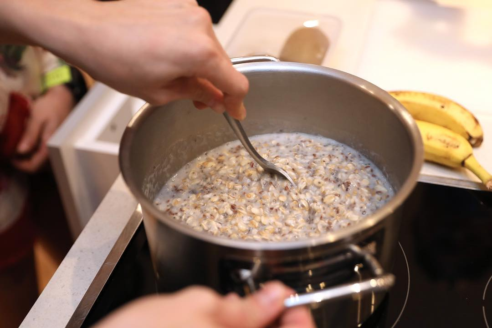
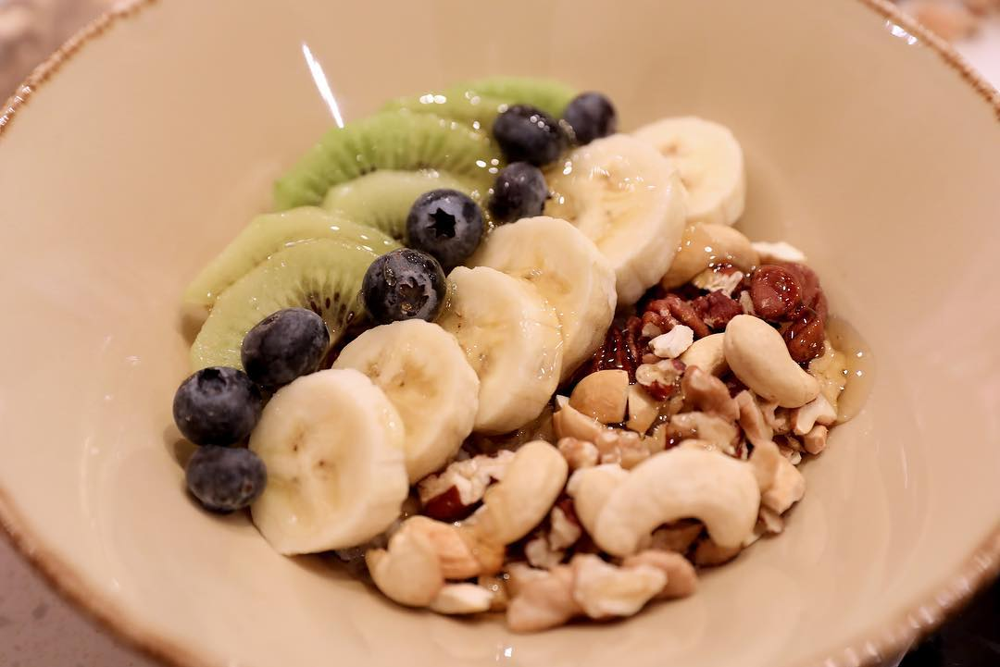

It’s less than 80 days till the biggest marathon of the year @sgmarathon in Singapore 🏃🏻♀️🏃🏽♂️🇸🇬 ! We were happy to share some training and nutrition tips and recipes of healthy nourishing breakfast and snacks with participants of #scsm2018 during our endurance nutrition workshop yesterday. Thanks to all workshop participants and event organizers @ironmanasia @sgmarathon and our partners @culinaryon_sg we had a great time with you 😊😊 — #sgmarathon #marathon #ironmanasia #culinaryon_sg #culinaryon #irunthisbody #marathontraining #preracemeal #sportnutrition #endurancetraining #endurancenutrition
2018-09-18 23:28:15
Back to main page